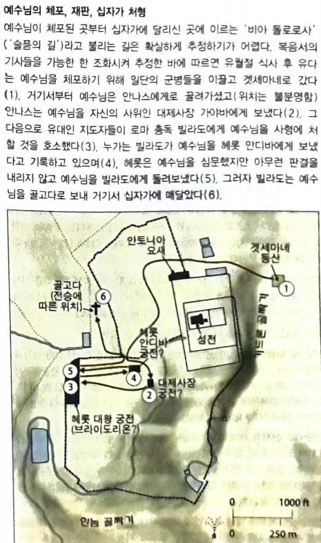

1새벽에 모든 대제사장과 백성의 장로들이 예수를 죽이려고 함께 의논하고
2결박하여 끌고 가서 총독 빌라도에게 넘겨 주니라
유대와 사마리아를 통치하던 헤롯 대왕의 아들 아켈라오의 폭정으로 로마는 그를 유배시키고 빌라도를 5대 총독으로 파견(26-36까지)
3그 때에 예수를 판 유다가 그의 정죄됨을 보고 스스로 뉘우쳐 그 은 삼십을 대제사장들과 장로들에게 도로 갖다 주며
4이르되 내가 무죄한 피를 팔고 죄를 범하였도다 하니 그들이 이르되 그것이 우리에게 무슨 상관이냐 네가 당하라 하거늘
5유다가 은을 성소에 던져 넣고 물러가서 스스로 목매어 죽은지라
6대제사장들이 그 은을 거두며 이르되 이것은 핏값이라 성전고에 넣어 둠이 옳지 않다 하고
7의논한 후 이것으로 토기장이의 밭을 사서 나그네의 묘지를 삼았으니
8그러므로 오늘날까지 그 밭을 피밭이라 일컫느니라
아말게다, 힌놈 골짜기와 기드론 골짜기의 접경에 있는 것으로 추정
9이에 선지자 예레미야를 통하여 하신 말씀이 이루어졌나니 일렀으되 그들이 그 가격 매겨진 자 곧 이스라엘 자손 중에서 가격 매긴 자의 가격 곧 은 삼십을 가지고
10토기장이의 밭 값으로 주었으니 이는 주께서 내게 명하신 바와 같으니라 하였더라
예레미야가 아니라 스가랴 11:12-13
12 내가 그들에게 이르되 너희가 좋게 여기거든 내 품삯을 내게 주고 그렇지 아니하거든 그만두라 그들이 곧 은 삼십 개를 달아서 내 품삯을 삼은지라
13 여호와께서 내게 이르시되 그들이 나를 헤아린 바 그 삯을 토기장이에게 던지라 하시기로 내가 곧 그 은 삼십 개를 여호와의 전에서 토기장이에게 던지고
11예수께서 총독 앞에 섰으매 총독이 물어 이르되 네가 유대인의 왕이냐 예수께서 대답하시되 네 말이 옳도다 하시고
12대제사장들과 장로들에게 고발을 당하되 아무 대답도 아니하시는지라
13이에 빌라도가 이르되 그들이 너를 쳐서 얼마나 많은 것으로 증언하는지 듣지 못하느냐 하되
14한 마디도 대답하지 아니하시니 총독이 크게 놀라워하더라
목숨을 위해 자기 변호를 하지 않는 것에 놀람
15명절이 되면 총독이 무리의 청원대로 죄수 한 사람을 놓아 주는 전례가 있더니
16그 때에 바라바라 하는 유명한 죄수가 있는데
17그들이 모였을 때에 빌라도가 물어 이르되 너희는 내가 누구를 너희에게 놓아 주기를 원하느냐 바라바냐 그리스도라 하는 예수냐 하니
그리스도라 하는 예수-바라바의 이름도 예수였기에
18이는 그가 그들의 시기로 예수를 넘겨 준 줄 앎이더라
19총독이 재판석에 앉았을 때에 그의 아내가 사람을 보내어 이르되 저 옳은 사람에게 아무 상관도 하지 마옵소서 오늘 꿈에 내가 그 사람으로 인하여 애를 많이 태웠나이다 하더라
20대제사장들과 장로들이 무리를 권하여 바라바를 달라 하게 하고 예수를 죽이자 하게 하였더니
21총독이 대답하여 이르되 둘 중의 누구를 너희에게 놓아 주기를 원하느냐 이르되 바라바로소이다
22빌라도가 이르되 그러면 그리스도라 하는 예수를 내가 어떻게 하랴 그들이 다 이르되 십자가에 못 박혀야 하겠나이다
23빌라도가 이르되 어찜이냐 무슨 악한 일을 하였느냐 그들이 더욱 소리 질러 이르되 십자가에 못 박혀야 하겠나이다 하는지라
24빌라도가 아무 성과도 없이 도리어 민란이 나려는 것을 보고 물을 가져다가 무리 앞에서 손을 씻으며 이르되 이 사람의 피에 대하여 나는 무죄하니 너희가 당하라
25백성이 다 대답하여 이르되 그 피를 우리와 우리 자손에게 돌릴지어다 하거늘
백성=예수님 입성 때 호산나를 외쳤던...
26이에 바라바는 그들에게 놓아 주고 예수는 채찍질하고 십자가에 못 박히게 넘겨 주니라
27이에 총독의 군병들이 예수를 데리고 관정 안으로 들어가서 온 군대를 그에게로 모으고
빌라도의 총독공관
28그의 옷을 벗기고 홍포를 입히며
홍포=로마황제의 망토
29가시관을 엮어 그 머리에 씌우고 갈대를 그 오른손에 들리고 그 앞에서 무릎을 꿇고 희롱하여 이르되 유대인의 왕이여 평안할지어다 하며
30그에게 침 뱉고 갈대를 빼앗아 그의 머리를 치더라
31희롱을 다 한 후 홍포를 벗기고 도로 그의 옷을 입혀 십자가에 못 박으려고 끌고 나가니라
32나가다가 시몬이란 구레네 사람을 만나매 그에게 예수의 십자가를 억지로 지워 가게 하였더라
구레네:유대인들이 많이 살던 북아프리카 지역
33골고다 즉 해골의 곳이라는 곳에 이르러
34쓸개 탄 포도주를 예수께 주어 마시게 하려 하였더니 예수께서 맛보시고 마시고자 하지 아니하시더라
35그들이 예수를 십자가에 못 박은 후에 그 옷을 제비 뽑아 나누고
36거기 앉아 지키더라
37그 머리 위에 이는 유대인의 왕 예수라 쓴 죄패를 붙였더라
38이 때에 예수와 함께 강도 둘이 십자가에 못 박히니 하나는 우편에, 하나는 좌편에 있더라
39지나가는 자들은 자기 머리를 흔들며 예수를 모욕하여
40이르되 성전을 헐고 사흘에 짓는 자여 네가 만일 하나님의 아들이어든 자기를 구원하고 십자가에서 내려오라 하며
41그와 같이 대제사장들도 서기관들과 장로들과 함께 희롱하여 이르되
42그가 남은 구원하였으되 자기는 구원할 수 없도다 그가 이스라엘의 왕이로다 지금 십자가에서 내려올지어다 그리하면 우리가 믿겠노라
43그가 하나님을 신뢰하니 하나님이 원하시면 이제 그를 구원하실지라 그의 말이 나는 하나님의 아들이라 하였도다 하며
44함께 십자가에 못 박힌 강도들도 이와 같이 욕하더라
45제육시로부터 온 땅에 어둠이 임하여 제구시까지 계속되더니
46제구시쯤에 예수께서 크게 소리 질러 이르시되 엘리 엘리 라마 사박다니 하시니 이는 곧 나의 하나님, 나의 하나님, 어찌하여 나를 버리셨나이까 하는 뜻이라
15시는 기도시간(행3:1), 예수님은 마지막 순간 기도를 시작하신 것임?(시22:1)
내 하나님이여 내 하나님이여 어찌 나를 버리셨나이까 어찌 나를 멀리 하여 돕지 아니하시오며 내 신음 소리를 듣지 아니하시나이까
47거기 섰던 자 중 어떤 이들이 듣고 이르되 이 사람이 엘리야를 부른다 하고
엘리 엘리 라마 사박다니의 엘리를 엘리야로 잘 못 들음
48그 중의 한 사람이 곧 달려가서 해면을 가져다가 신 포도주에 적시어 갈대에 꿰어 마시게 하거늘
49그 남은 사람들이 이르되 가만 두라 엘리야가 와서 그를 구원하나 보자 하더라
50예수께서 다시 크게 소리 지르시고 영혼이 떠나시니라
51이에 성소 휘장이 위로부터 아래까지 찢어져 둘이 되고 땅이 진동하며 바위가 터지고
성소 휘장이 찢김=성전은 더 이상 성전으로서 기능을 하지 못함, 하나님과 인간의 교제를 가로막았던 유대교 대신 새로운 공동체가 등장할 것임
52무덤들이 열리며 자던 성도의 몸이 많이 일어나되
53예수의 부활 후에 그들이 무덤에서 나와서 거룩한 성에 들어가 많은 사람에게 보이니라
54백부장과 및 함께 예수를 지키던 자들이 지진과 그 일어난 일들을 보고 심히 두려워하여 이르되 이는 진실로 하나님의 아들이었도다 하더라
55예수를 섬기며 갈릴리에서부터 따라온 많은 여자가 거기 있어 멀리서 바라보고 있으니
56그 중에는 막달라 마리아와 또 야고보와 요셉의 어머니 마리아와 또 세베대의 아들들의 어머니도 있더라
57저물었을 때에 아리마대의 부자 요셉이라 하는 사람이 왔으니 그도 예수의 제자라
사53:9 그는 강포를 행하지 아니하였고 그의 입에 거짓이 없었으나 그의 무덤이 악인들과 함께 있었으며 그가 죽은 후에 부자와 함께 있었도다, 요셉은 예수님의 사형을 반대한 유일한 산헤드린 구성원
58빌라도에게 가서 예수의 시체를 달라 하니 이에 빌라도가 내주라 명령하거늘
59요셉이 시체를 가져다가 깨끗한 세마포로 싸서
60바위 속에 판 자기 새 무덤에 넣어 두고 큰 돌을 굴려 무덤 문에 놓고 가니
61거기 막달라 마리아와 다른 마리아가 무덤을 향하여 앉았더라
62그 이튿날은 준비일 다음 날이라 대제사장들과 바리새인들이 함께 빌라도에게 모여 이르되
63주여 저 속이던 자가 살아 있을 때에 말하되 내가 사흘 후에 다시 살아나리라 한 것을 우리가 기억하노니
64그러므로 명령하여 그 무덤을 사흘까지 굳게 지키게 하소서 그의 제자들이 와서 시체를 도둑질하여 가고 백성에게 말하되 그가 죽은 자 가운데서 살아났다 하면 후의 속임이 전보다 더 클까 하나이다 하니
65빌라도가 이르되 너희에게 경비병이 있으니 가서 힘대로 굳게 지키라 하거늘
66그들이 경비병과 함께 가서 돌을 인봉하고 무덤을 굳게 지키니라
예수님에게 안식일을 지키지 않는다고 비난하던 대제사장들(사두개파)과 바리새파 사람들이 스스로 안식일날 노동을 함
